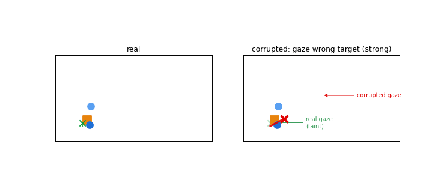
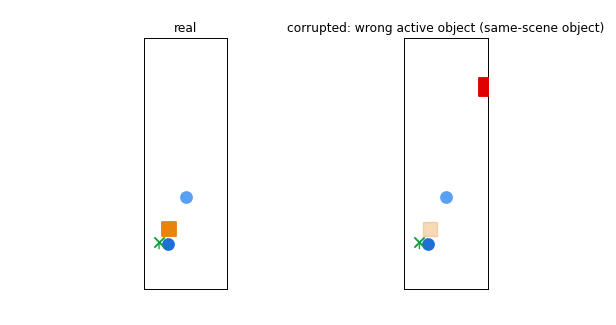
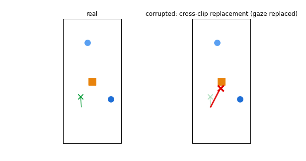
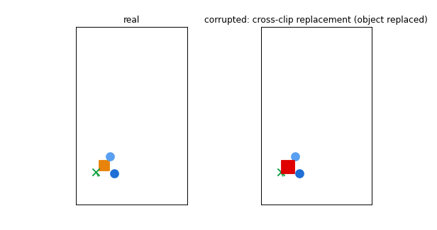
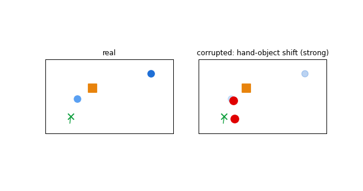
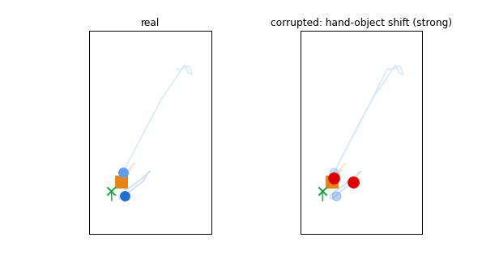
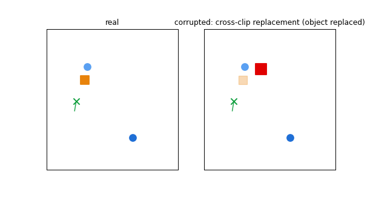
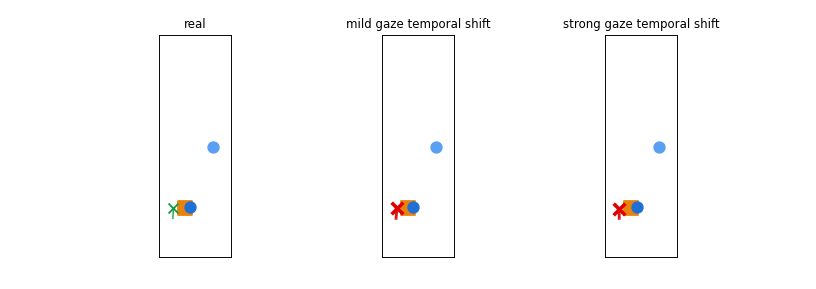

Model: hand-object + gaze + head/camera, subject split (held-out participant P0009). Left = real, right = corrupted. In the corrupted panel the corrupted modality is drawn in RED, with a faint marker showing where its real trajectory would be — the gap between them is the injected inconsistency. Each card lists the model's plausibility scores and the verdict (SUCCESS = real scored above the corruption).
■ object ● hands ✕ gaze | red = corrupted modality, faint = its real position.

| object | mug_white |
| corruption | gaze wrong target (strong) |
| model | hand-object + gaze + head |
| score(real) | +0.87 |
| score(corrupted) | -66.50 |
| verdict | SUCCESS ✓ (real > corrupted) |

| object | mug_white |
| corruption | wrong active object (same-scene object) |
| model | hand-object + gaze + head |
| score(real) | -19.95 |
| score(corrupted) | -24.11 |
| verdict | SUCCESS ✓ (real > corrupted) |

| object | dino_toy |
| corruption | cross-clip replacement (gaze replaced) |
| model | hand-object + gaze + head |
| score(real) | +19.04 |
| score(corrupted) | -42.33 |
| verdict | SUCCESS ✓ (real > corrupted) |

| object | puzzle_toy |
| corruption | cross-clip replacement (object replaced) |
| model | hand-object + gaze + head |
| score(real) | -1.26 |
| score(corrupted) | -30.02 |
| verdict | SUCCESS ✓ (real > corrupted) |

| object | mug_white |
| corruption | hand-object shift (strong) |
| model | hand-object + gaze + head |
| score(real) | +4.58 |
| score(corrupted) | -29.70 |
| verdict | SUCCESS ✓ (real > corrupted) |

| object | dumbbell_5lb |
| corruption | hand-object shift (strong) |
| model | hand-object + gaze + head |
| score(real) | +0.01 |
| score(corrupted) | +1.74 |
| verdict | FAILURE ✗ (corrupted ≥ real) |

| object | dino_toy |
| corruption | cross-clip replacement (object replaced) |
| model | hand-object + gaze + head |
| score(real) | -3.23 |
| score(corrupted) | -2.48 |
| verdict | FAILURE ✗ (corrupted ≥ real) |

| object | dino_toy |
| corruption | gaze temporal shift (severity) |
| model | hand-object + gaze + head |
| score(real) | -3.23 |
| score(mild) | -3.57 |
| score(strong) | -1.09 |
| verdict | SEVERITY FAILURE ✗ (strong scored ≥ mild, so it did not rank real > mild > strong) |